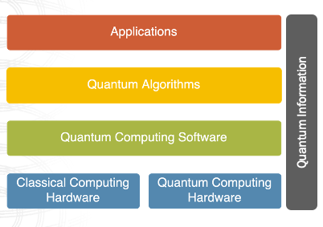
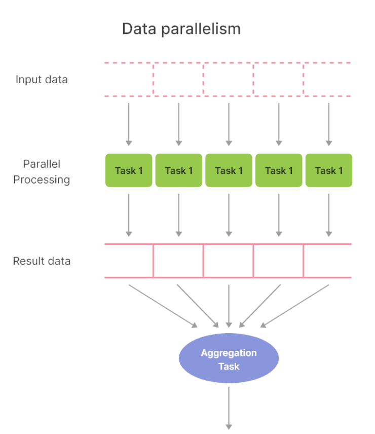
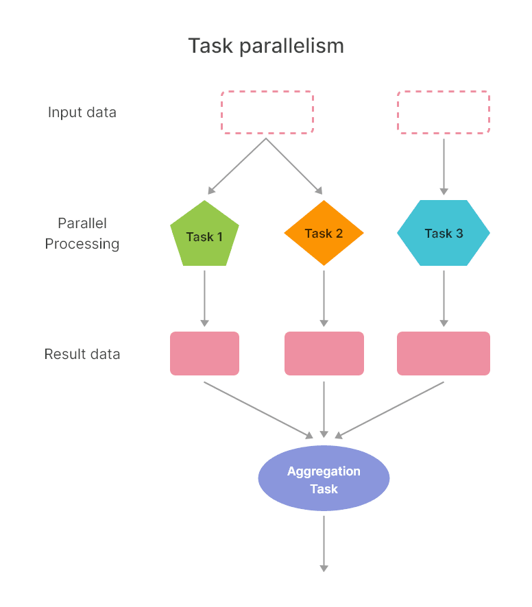
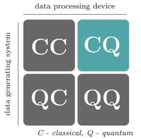
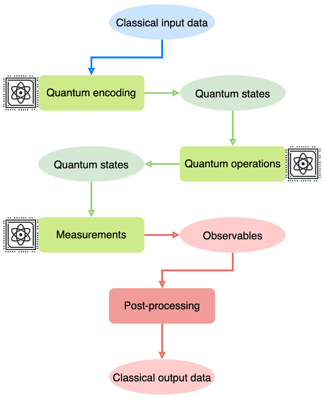

Introduction to Classical and Quantum Computing#
Warning
These lecture notes are a work in progress and are not a replacement for watching the lecture video, it’s intended to be a supplementary reading after watching the lecture.
Learning outcomes
This is an introductory module, which sets the stage for the remaining course by discussing some very elementary question into computing, and delves into quantum computing. As we go through the sections below, we will:
Gain knowledge to evaluate the capabilities, limitations and potential areas for applying quantum computing.
Demonstrate an understanding of the value chain and value proposition of quantum computing alongside classical high-performance computing.
Demonstrate ability to identify key high-level tipping points to reach practical quantum computing.

The Era of High-Performance Computing#
Generations of Computing#
The current form of Classical Computation started in the first half of the 20th century, where vacuum tubes used voltages differences and were used to control the electron flows and implement logical operations for early digital computations. This led to innovations towards electronics where semiconductor-based transistors had the ability to have smaller form factor, more reliable, faster and energy-efficient electronic devices.
The third generation came about when semiconductor-based devices could be packaged into dense electronic circuits, in which a large number of tiny transistors could be integrated into discrete electronic components for specific functionalities.
With the fourth revolution, very-large-scale integration capabilities and micro and nano-fabrication technologies allowed the revolution where a wide range of powerful, application specific, parallel, field-based or energy-efficient microprocessors have been created. These microprocessors have led to the development of smart devices that are deployed out in the field as sensors, in our mobile devices, work stations or more aggregated compute systems such as HPC clusters or public cloud systems.
There are two common elements in each of these first four generations of computing:
The unit of representing and processing data has been in terms of binary states (on/off, or 0/1 or
true/false).
The advancements have been in shrinking the form factor through fabrication and packaging within the world of classical mechanics, i.e. controlling a stream of sub-atomic particles to represent the binary states (to oversimplify – a flow of electrons represents zero, or the opposite a one).
One among the latest emerging revolutions in computing is quantum computing about which we will learn more in this lecture and the rest of the course.
At a high-level the leap and main difference in quantum computing is:
By controlling the properties of atomic or sub-atomic particles at a much finer level of granularity and precision, quantum computing works as a different paradigm of computation.
And in this new paradigm, data is no longer represented in binary states (i.e. either zero or one), but as a probability-based combination of different possible states (for example, as a zero and one at the same time with certain probabilities). This brings in a huge change in the way data is represented as well as processed in quantum computing compared to classical computing – but more on this later in this session and rest of the course – particularly, the one on bits to qubits.
Scales of Computing#
From another perspective, we can see the trends in how capabilities of computing systems have also evolved. The currently familiar form of digital computers were initially targeted at personal computing (of course if we acknowledge and park the mainframe computations for the moment).
These desktop-based computers originated with limited single-core processor capabilities, and then evolved into multi-core processors on which computations in an application are parallelized at the logic/algorithmic level as well as at the instruction level to exploit parallel execution on several hardware or virtual cores on processors. Depending on the systems, current multi-core systems have 4, 8 or even dozens of cores on a single processor these days. This led to the parallelization of many applications delivering performance through shorter time-to-solution, energy efficiency or in the form of high-throughput computing.
In addition to CPU-based computing, accelerators (e.g. graphics processing units (GPU), field-programmable gate arrays (FPGA) or recently tensor processing units and vector processing units) have created a generation of heterogeneous parallel processing systems and applications. Some types of computations and data are better suited for processing on CPUs, while other types are better on certain accelerator devices.
Now, the field of high-performance computing has leveraged this ability to build heterogeneous parallel processing systems and applications that are optimised for computation performed on large-scale systems such as supercomputers, public cloud systems, as well as on small-form factor devices such as smart sensors or mobile platforms or even satellites. It is important to note that high-performance computing, typically referred to as HPC, is the ability to seamlessly execute different parts of a complex application efficiently on different types of computing devices which may be connected together. And these HPC systems may be supercomputers, HPC clusters or your powerful workstation, or smart devices.
Currently, most of the focus in HPC is not just about building more powerful or efficient systems, but also to optimise the algorithms and their software implementations to solve more complex problems with increased accuracy, speed and scale. This is where quantum computing is positioned to serve as another type of accelerator in high-performance computing, where certain parts of a computation or application could benefit from being solved on quantum processors, while the rest of the application is better to be run on classical processors. With this, we are at the cusp of quantum computers being coupled or integrated to form hybrid high-performance quantum computers. So, as the quantum computing technology evolves, we are likely to see more seamless hybrid classical HPC quantum systems, and heterogeneous applications where there are both classical as well as quantum algorithms and software solutions working together.
What can HPC do?#
Now, before going further to quantum computing or its applications, we take a moment to acknowledge where classical high-performance computing currently plays a role across different domains and problems.
The digital transformation of many sectors, businesses and solutions has moved to a data-centric scenario where the huge variety and volume of heterogeneous datasets from different sources:
be observed data from satellites, devices, vehicles
human-related data such as transaction, personal data, activities
or data from simulation of different systems and scenarios
All of these types of input data are analysed to infer intelligent and actionable, decisions, policies and strategies – both for commercial services or by public agencies.
The analysis is typically performed by a variety of techniques – numerical or statistical modelling that use rules of the underlying principles (whether in natural or man-made systems), as well as more recently AI-based modelling that are build to capture the characteristics of data.
These types of models are used to analyse the data, simulate further scenarios – the models generate more data and also allow for end results, outputs that are used for decision-making, designing products, solutions and services.
The role of high-performance computing has increasingly allowed for building and running such modelling and analytics – with a focus on doing more complex modelling and analytics that used to be out of reach of less powerful computing systems.
So, HPC allows for doing increasingly more data-informed complex modelling and analytics.
Another factor that HPC enables is increasing the accuracy and precision of these modelling, simulation and analysis exercises – instead of approximating the complexity and simplifying the computations due to limitations in time or computing resources.
Thus, HPC has enabled a wide variety of sectors and businesses to do more complex modelling, simulation and analysis with improved accuracy, precision and time-to-solution.
Where does Quantum Computing fit?#
So far, we have touched on the role and applications of high-performance computing, and pointed out where many sectors and organisations are most likely already using it to build and power digital solutions. We now move on to address where quantum computing fits in this context, and why we look towards this emerging computing paradigm.
The primary reasons why computational technology developers and its end-users are looking at the next generation of methodologies and platforms is that currently there are a number of challenges and limitations that classical high-performance computing is hitting
A number of complex computational, simulation and modelling problems remain intractable – a feasible time-to-solution is achieved by reducing the complexity through approximations of the problems/systems that are solved (through methods such as heuristics), or reducing the precision of the solution to be completed in an acceptable threshold that produces a good-enough solution. This is a compromise between high-accuracy or high-precision, versus a reasonable time-to-solution or what problem size can be actually represented and solved in a classical high-performance computer.
Typically, these are faced in all of the sectors, algorithms and application areas that we walked through earlier.
Even on supercomputers, for time-bound applications such as weather forecast, or real-time applications – the available time to compute a solution is limited, or the ability of decompose a problem into smaller parts for parallel processing is also being limited due to the nature of the problem.
This is one of the primary reasons why developers are looking at alternate computing techniques to supplement the existing classical high-performance computing as accelerators for specific parts of the problem.
There are also fundamental reasons that are closer to the hardware-level that has limited the ability to build more and more powerful classical HPC systems.
The power wall is a problem that limits the ability to pack more transistors into processors with limited power consumption, whilst managing heat dissipation. It also refers to the difficulties involved in building larger supercomputing systems that are efficient and do not require a township’s worth of energy consumption - therefore the power requirements of more and more powerful HPC systems and processors is a limiting factor.
The memory wall on the other hand is the increasing disparity between processors and memory/data storage devices. The computational modelling and analysis methods are driven by more and more data that are stored and have to be efficiently processed. Exploring large data or parameter spaces is typical in areas such as computational physics, chemistry, optimisation and data analysis problems. How data is represented and computations are performed on the data is becoming another key bottleneck.
Finally, the ability to build more powerful and dense processors has been a long-standing problem in the semiconductor industry – scaling the fabrication of classical processors into smaller and smaller form factors are limited by challenges in engineering as well as fundamental physics.
This is where the underlying principles for making quantum computing feasible, by leveraging its fundamental computational power, and engineering quantum computing devices emerged.
How does Quantum Computing work?#
One of the key methods by which individual processors have been classically made more powerful has been through reducing their scale and size. Chipmakers have incrementally gone down in the sizes of transistors that are used to build processors from 10 nanometers to 7 nanometers to now 5 and 3 nanometers.
In simplistic terms, a transistor is a device to control the flow of electrons, and using that ability to represent binary states (simplistically, a flow in a certain direction may represent zero, while in the opposite may represent one). Typically within a transistor, the source and drain are two ends, while a gate is used to control the flow of electrons between the source and drain.
As transistor sizes are reduced to pack more of them into processors, the physical sizes of the transistors, particularly, the dimensions of source, drain, gate also reduce in size.
They have been reducing so much in size that it becomes increasingly difficult at an engineering level to control the flow of electrons accurately, and also the physics principles based on which electrons behave also move from classical mechanics to quantum mechanics.
This is a challenge and has limited the ability to build smaller transistors and more densely packed classical processors.
However, quantum mechanics and quantum effects that happen in a device at such small scales offer the opportunity to represent and process data in a different paradigm – quantum computing technologies.
Rather than controlling a flow of electrons, and using that to represent zero or one as binary states of data – quantum computing works at such as small scale where the states of data are represented using individual particles - electrons or ions or specific charged atoms – and these individual particles are then controlled and manipulated to implement processing of their states and data.
Therefore, fundamentally, representation and processing of data works at a much smaller scale in quantum computing devices compared to classical computing devices.
Often, these quantum effects are presented in many articles as quantum tunnelling, entanglement, superposition, etc… Further details on these quantum effects are discussed in the Lecture 3: Mathematical framework for Quantum Computing.
Now, to implement a quantum processor, different particles are being explored to present the state of data and the methods used to control the particles also vary – this is what we observe from different technology developers pursuing superconducting, trapped ion, neutral atom, silicon dots, diamond-based or topological qubit technologies.
Which approach is the most efficient, accurate and promising one? That is yet to be determined. Presently, all of these are being pursued by different players with an aim to improve the accuracy and reliability of these systems, since, at such a small scale, quantum systems are easily affected by noise from their environment. Control over the individual particles is so fragile that the quantum states do not last too long – thus, they become erroneous or incorrect very soon, and hence you can do only very short computations.
Thus, most of the efforts are currently to pursue these different approaches for realising and manufacturing quantum processors, and explore which ones can become mature and reliable enough like current classical processors.
Classical computing works by controlling flow of electrons (bits, binary states).
Quantum computing works by controlling (sub-)atomic particles at an individual level.
This is the source of quantum computing’s power that is based on quantum mechanics.
Can bring precision, accuracy, scale of problem, time to solution, etc.
A representation of data (as qubit) can be at more than one value (state) at the same time with certain probabilities.
This is where quantum computing, specifying data and operations/computing for quantum computers and quantum programming is radically different from classical computing.
Where is Quantum Computing Positioned#
Looking ahead, given that we are in the second revolution of quantum technologies and at the early stages of developing the quantum computing technologies, where should we position it alongside the existing classical computing technologies?
Well, as we have already mentioned quantum computing is an emerging methodology and technology that is aimed as an accelerator in high-performance computing platforms and systems.
Currently, it is understood to be suitable for very specific types of computations which it can do much better than their classical HPC counterpart implementations.
These types of specific computations include tasks such as modelling and simulating complex systems that are analogous to quantum mechanics systems, such as physics systems, molecular structures, certain mathematical problems. These problems are often classically intractable at the desired level of accuracy, but quantum computing can potentially make such complex simulations and computations achievable.
Having said that, while a number of interesting algorithmic approaches are being developed and their applications to practically relevant use-cases identified, there is a lot more to be further explored both in terms of algorithms and the types of use-cases that are suited for quantum computing. At present we are limited by high levels of noise and the relatively low number of qubits available on current quantum computers, but future applications of quantum computing could be much more broad.
We will look at a few examples of fields in which quantum computing is currently being used in a moment when we consider the quantum computing ecosystem. Before that however, we want to answer what may be the first question for many of us — “where do I start to see if quantum computing is going to be relevant or beneficial for me?”:
when modelling and simulating systems with complex characteristics, parameter spaces, correlations;
when the computations and calculations require approximations to make the solution tractable, for instance exploring a huge parameter space for the best solution;
when we use lower precision to perform computations and representation of data on classical HPC compared to the problem’s natural precision;
when the time to compute a solution needs to be reduced by several orders of magnitude.
These are typically candidates where quantum computing could help and deliver a potential improvement compared to classical computing methods.
Therefore, when looking for candidate computations or use-cases, look for specific parts that need more accuracy in exploring large parameter spaces, probabilistic systems when complex correlations, representing systems or problems with higher precision.
The Quantum Computing Ecosystem#
Here is an initial sketch of the ecosystem.
%%{init: {'theme':'base', 'fontSize': '11', 'securityLevel': "loose"}}%%
mindmap
root["Quantum Computing Ecosystem"]
prv(("Providers"))
[IBM Quantum]
[Rigetti Computing]
[D-wave Systems]
[IonQ]
[Microsoft]
dev("Developers")
[Researchers]
[Industries]
use(("Users"))
[Researchers]
[Chemistry]
[Bioinformatics]
[Material Science]
[Industry]
[Pharmacy]
[Finance]
inv("Investors")
[Government]
[Industry]
Lecture 1b: Integrating Classical and Quantum Computing#
Warning
These lecture notes are a work in progress and are not a replacement for watching the lecture video, it’s intended to be supplementary reading after watching the lecture.
Learning outcomes
Understand the reasons and opportunities for integrating classical high-performance computing & quantum computing systems.
Demonstrate a high-level technical understanding of hybrid high-performance computing & quantum computing systems.
Acquire knowledge of ongoing efforts towards integrating classical high-performance & quantum computing systems.
Why integrate classical & Quantum Computing#
Classical High-Performance Computing#
In the simplest of cases, applications to process data or perform modelling or analysis, are typically represented as a computer program which is executed on a Central Processing Unit (CPU). For such simple cases, the CPU can be imagined to have one worker that executes the program instructions in a serial fashion to produce the desired output. As the complexity of applications and their logics increased, opportunities arose to do what is called parallel computing – this involves executing multiple parts of a program simultaneously on multiple workers within Processing Units. For example, the program or parts of the instructions (known as kernels) within the program, may have to be executed to process different input data sets which are independent of each other – so, these could be done in parallel. This is typically referred to as data parallelism, and is illustrated in Fig. 1. Another example, shown in Fig. 2, is where, for the same input data, different kernels within a program may be executed independent of each other and hence in parallel. This is referred to as task parallelism.
{kind=link}

Fig. 1 – Data parallelism. Source: https://tinyurl.com/2jpdk47x#
{kind=link}

Fig. 2 – Task parallelism. Source: https://tinyurl.com/2jpdk47x#
As the complexity of applications and their logic increased, computational scientists and HPC specialists built software libraries that take advantage of data parallelism and task parallelism within their applications, so that their programmes could be executed in parallel. They leverage powerful multi-core CPUs made up of multiple workers (known as cores) which allows for the execution of parallel programmes. Typically, multi-core CPUs have anywhere between 2 to 40 or 60 cores, depending upon whether you have them in your laptop or in a powerful server on high-performance computing systems. Now-a-days even processors on edge devices such as smart sensors and satellites have multi-core processors. In this context, as the complexity of applications and their logics continued to grow, and the opportunities for data and task parallelism within them were identified more and more, special-purpose processors which are very good at certain types of parallel execution were created. Examples of these are graphics processing units (GPUs) and field-programmable gate arrays (FPGAs) which have 100s or 1000s of cores in a single processor. Since these are special-purpose, they are often referred to as accelerators. Consequently, while the general purpose CPUs are responsible for executing an application programme, they offload some of the kernels in an application to these special-purpose accelerators and get partial results back from them to complete the rest of the program’s execution. Of course there are exceptions where, for instance, FPGAs are deployed as standalone devices on control systems in factories, robots, etc… But, in the context of systems modelling, analytics, AI, simulation, these special-purpose processors such as GPUs and FPGAs are often used by the CPU for specific kernels within an application’s program.
Another point to note is that, initially the software tools and libraries required to program such different types of processors also remained different. Over a number of years, programmers, software developers and HPC experts have had to integrate different software tools and libraries for a single program that is composed of multiple heterogeneous kernels, each of which is executed on the most suitable processor. Often, this was done in collaboration with end users from academia and industry that own the applications in order to better understand the use-cases and ensure that these tools fit the requirements and uses within the community. Over time, interoperability and unification of these software tools and libraries was achieved – as a result of which now-a-days many programming libraries have the ability to target different processor types under the hood, thereby reducing the difficulty of end-users, application developers and computational scientists.
Co-existence of Classical & Quantum Computing#
Now, given the history and trajectory of how such special-purpose accelerators such as GPUs and FPGAs were developed and have been integrated into the general-purpose CPUs ecosystem (both at hardware and software levels), it is essential for us to take a moment and observe where quantum computing systems and quantum processing units QPUs are currently placed, and how they will and should function alongside these classical processors.
In our earlier lecture on “Demystifying quantum computing”, we had introduced that quantum computing is an emerging methodology and technology, and is understood to be suitable for very specific types of computations. Therefore, similar to GPUs and FPGAs, quantum computers and QPUs will be used as accelerators and be driven by a general purpose CPU-based computer whether on a desktop or within HPC systems.
In this context, there are two aspects to observe with regards to the co-existence of classical and quantum computing systems and applications.
Firstly, while classical computing systems are already interfaced with quantum computers, this has been done more for the purpose of providing access, development and demonstration. How classical and quantum computing systems interface to exchange data, transfer application kernels between each other, and how the existing classical software tools and libraries can support the seamless programming of quantum computers has a lot more gaps and opportunities for innovation and development. This is analogous to how time and efforts were spent through collaboration between the scientific, enterprise and HPC communities to integrate CPUs, GPUs and FPGAs at hardware and software levels.
The second aspect to observe is that, while all of the classical computing systems and processors represent and process data in the same way – as bits using high-level abstract programming libraries, quantum computing systems and QPUs represent and process data in a completely different way – as qubits and currently use low-level gates which is equivalent to how computers were programmed around the mid 20th century. This is covered in more details in our lecture on “From Bits to Qubits”. Therefore, on one hand how classical and quantum computing systems exchange data and application kernels for processing is non-trivial – there has to significant translation performed. On the other hand, current methods and levels of representation of data and programs for quantum computing are at a very low-level. As mentioned earlier, quantum computers are programmed with data as qubits (while classical computers have higher-level abstractions such as objects, files, etc.) and quantum operations are defined using a combination of gates (which is similar to programming early computers using gates and flip-flops around the mid 20th century). Having acknowledged the currently primitive level of programming quantum computers, this will only continue to improve wherein high-level powerful abstractions for data and software libraries are being developed at the same time as the quantum computing hardware is improved.
Again, in the earlier lecture on “Demystifying quantum computing” we highlighted that while the reliability and scale of quantum computing is currently limited, there are ongoing efforts by enterprises and research groups to improve these noisy-intermediate scale quantum systems to build reliable error-corrected larger-scale quantum computing systems, quantum algorithms are being explored for different example use-cases, the computing community driven by the HPC experts and organisations, is driving the understanding and efforts required to enrich the software ecosystem and programmability of quantum computing systems.
And, the importance of doing this as a part of existing HPC software methods and tools through extensions is under discussion and being acknowledged by the scientific and enterprise communities, so that quantum computers can be seamlessly used within and by existing classical high-performance computing systems and its users. We will discuss this in a bit more detail later during this lecture.
Quantum Computation Workflow#
Before going forward with some specific examples of potential hybrid high-performance quantum computing applications, let us look deeper into the quantum computing part of an application workflow.

Presently, all data is generated and stored in classical format – that is in binary as bits. This is represented by the first letter in this map where C represents generation of classical data. This classical data is then processed by classical computing systems in classical formats. This is represented by the second letter in the map where C represents classical nature of the processing/computing system. Thus, the top left category CC is the scenario where classical data is generated and stored is processed by classical computing systems.
Towards the end of this lecture, we will highlight quantum sensing and metrology to collect or measure quantum data. So, that is one source of quantum data generation and the two bottom categories are scenarios where QC is the scenario where quantum data may be used for classical computing systems, an example is where classical applications such as machine learning models could be useful to study the internal state of a quantum system and associated quantum data. And, QQ is where quantum data is processed by quantum computers. This quantum data may come from measuring a quantum system through quantum sensing and metrology technologies, or quantum data within a quantum computer to simulate a quantum system such as a physics or molecular models.
Now, the highlighted category CQ is the scenario where quantum computing systems process classical data. The data can be constituted of any kind of observations from classical systems such as text, images, time series, structured or unstructured data. In this scenario, is necessary to translate the classical data and represent it as quantum data within a quantum computer for it to be processed. This is illustrated in the workflow below.

The classical input data is transformed into quantum data through a step commonly referred to as quantum encoding or state preparation. The result is quantum states in which a set of qubits are used to represent the data as a superposition – do not worry about the terminologies and complexities now – if you continue with future lectures, these are introduced more understandably. For now, it is essential to just acknowledge that classical input data has to be encoded into quantum states, which can then be processed by a quantum program which is defined using a series of quantum operations. These quantum operations process the initial quantum state into a resultant quantum state. At the end of the processing, in order to get the quantum results out of the quantum computer, a series of steps have to be performed. The first of these steps is to perform measurements to read what are called observables of the quantum computing system.
Let’s pause here for a moment. In the lecture on “Demystifying quantum computing”, we discussed that there are several technology options available to engineer and develop a quantum computer – using superconductors, photons, neutral atoms, ions, etc. – each with its own pros and cons. Depending on the technology used to implement a quantum processor, the observables of the quantum system that will be measured may be different. For a photon-based quantum computer, the observables can be phase, polarisation and wavelength. Irrespective of this, the observables are measured to describe the state of a quantum system.
Coming back to this workflow, the measurements are performed to read the observables of the state of the quantum computing system at the end of a quantum program. These observables describe the properties of the final state of the quantum system, and are post-processed to translate the output of the quantum workflow into classical data.
In summary, explicit complex steps are required to encode classical input data into an initial quantum state, on which a quantum program, through quantum operations, can be applied. The final quantum state of the quantum computing system is measured to read observables that describe the system’s properties, and the observed properties have to be post-processed to reconstruct the results of the quantum computation as classical output data.
There are two points to note here:
First, all steps indicated as green rectangles and their results as green circles are in the quantum paradigm or system, while the blue and red steps and their results are in the classical paradigm or system.
Second, quantum encoding can be a very expensive step depending on what data we want to encode and quantum processing we want to do. For instance, the cost of encoding the properties of a molecule may be less expensive.
But large datasets like those used to train machine learning or deep learning models will be very expensive to encode, and hence any quantum advantage due to quantum processing may be negated by the cost of quantum encoding. This is a key dictator of what types of data and problems have an advantage for using quantum computing. Also, at present due to the low-level of programming abstraction that we discussed earlier, it is quite complex to define a quantum program using quantum operators. A combination of skills spanning quantum mechanics, quantum information processing, advanced algebra, software development and domain expertise are required together. This is where advancement of software tools and libraries as well as skills development is important for programming quantum computers.
Finally, reading out the results from a quantum computer is also an area of active development to improve accuracy of the measurements and one of the places where error correction can be applied.
More details on these will be discussed in other QPCC lectures.
Quantum computing as an accelerator#
Now, having looked a bit more into the detail of what a quantum computing workflow generally involves, let us fit this into the larger picture that we had discussed earlier.
For classical computing using CPUs, GPUs and FPGAs, the classical application program natively takes classical data as input and produces classical data as output. When using quantum computing systems and QPUs as accelerators alongside the classical computing systems and processors, the result is that the entire quantum workflow that we discussed earlier needs to be implemented in order to offload an application kernel and its data from the classical computer that has to be accelerated by the quantum computer.
Consequently, this is the primary reason that necessitates integration of classical high-performance and quantum computing systems at different levels of the stack, from physical location, communication network, processing, data storage, several payers of software and programming tools, algorithms and applications. This full-stack integration is essential for efficiently and effectively using quantum computing as an accelerator, is non-trivial, and is discussed in a bit more detail later in this lecture.
In the meantime, let us have a look at some application examples from a few select sectors to understand why integrated hybrid high-performance quantum computing could be beneficial and impactful.
What does QPCC offer you#
References#
E. Grumbling and M. Horowitz, Quantum Computing: Progress and Prospects, Chapter 1
M.A. Nielsen and I.L. Chuang, Quantum Computation and Quantum Information, Section 1.1, 1.3
T.G. Wong, Introduction to Classical and Quantum Computing
T.S. Humble et al., Quantum Computers for High-Performance computing, IEEE Micro 41, 15 (2021)